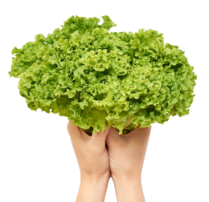
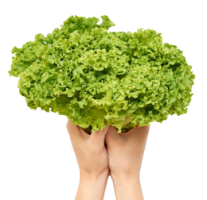

Kelompok Wanita Tani RT 28 Seraya 🥬
Kelompok wanita tani RT 28 Sepinggan Raya (Seraya) adalah sebuah
komunitas perempuan petani yang berlokasi di wilayah RT 28 Sepinggan
Raya, Balikpapan.
Kelompok ini bertujuan untuk meningkatkan kesejahteraan anggotanya
melalui usaha pertanian dan pemberdayaan perempuan di bidang
agraris.


 
